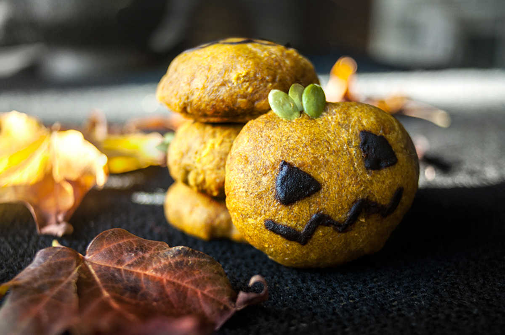
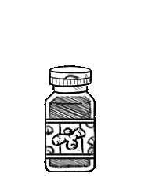

halloween pumpkin cookies
15 cookies — 30 minutes
Been a while since we've baked cookies. It being pumpkin season, the choice was obvious.
These are not very sweet, namely because of the addition of coconut sugar which has a subtle and more complex taste. Coconut sugar will make your cookies a darker shade of orange, almost brown, and we think it fits nicely with the toned-down color of the pumpkin seeds. If you want a bold orange color, use white cane sugar instead.
Leftover chocolate: This recipe makes more chocolate than is needed for the recipe. If you want to keep it for later, pour it in a chocolate mold or shallow container and put it in the freezer. It will become solid and you'll have delicious homemade chocolate on the side for later times! Once it's solid, pop it out of the mold and put it in a closed container. Keep it in the freezer until you're ready to eat it!
Pumpkin puree how-to: Remove seeds and stringy flesh from pumpkin. Cut the pumpkin into large chunks and place on a baking sheet. Preheat the oven at 180 °C (350 ºF). Roast pumpkin for 45 minutes until pumpkin is soft and tender. Let cool. Remove skin, and process into a food processor or use a handstick blender. If pumpkin puree is too wet, strain liquid through cheesecloth, if too dry, add a bit of water. The puree keeps for 3 days in the fridge, and up to 3 months frozen.
 all purpose flour60 g
all purpose flour60 g spelt flour50 g
spelt flour50 g cinnamon2 g
cinnamon2 g- ginger root powder2 g
 baking powder7 g
baking powder7 g baking sodapinch
baking sodapinch coconut sugar70 g
coconut sugar70 g canola oil45 ml
canola oil45 ml pumpkin122 g, pureed
pumpkin122 g, pureed pumpkin seeds45 seeds
pumpkin seeds45 seeds
cookie dough
- Preheat oven to 180 °C (350 °F).
- Stir 60 g (1/2 cup) of all purpose flour, 50 g (1/2 cup) of spelt flour, 2 g(1/4 tsp) of cinnamon, 2 g(1/4 tsp) of ginger root powder, 7 g (1 1/2 tsp) of baking powder, and a pinch of baking soda together in a bowl.
- See above description to make your own pumpkin puree.
- In another bowl, add 122g (1/2 cup) of pureed pumpkin, (3 tbsp) 45 ml of canola oil(coconut oil is ok too) and 70 g (1/2 cup) of coconut sugar. Stir everything together until smooth and well incorporated.
- Add the wet to the dry ingredients, mix with a wooden spoon until you get a soft and consistent dough. It will be sticky, but that's fine, if it's too sticky add extra flour. Let the dough rest for 10 minutes.
- Line a baking sheet with a baking mat. Make little balls of dough, as round as you can make them, and flatten each one gently. Bake for 15 minutes.
- Decorate each cookie with 3 pumpkin seeds, sticking them at the top (pointy end in).
- canola oil60 ml
 cocoa powder20 g
cocoa powder20 g vanilla extract1.25 ml
vanilla extract1.25 ml maple syrup20 ml
maple syrup20 ml
chocolate
- Mix 60 ml (1/4 cup) of canola oil, 20 g (1/4 cup) of cocoa powder, 1.25 ml (1/4 tsp) vanilla extract, 20 ml (2 tbsp) maple syrup and a pinch of salt together in a glass bowl.
- Put a bit of water to boil in a pot (large enough to fit your bowl, or to have it hanging overtop).
- Lower the heat to a simmer, add the glass bowl with the chocolate into the pot, stir with a spoon until the chocolate is smooth and runny.
- Remove from heat. Take a toothpick and dip into the chocolate, draw pumpkin faces on your cookies and serve as is!